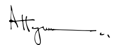
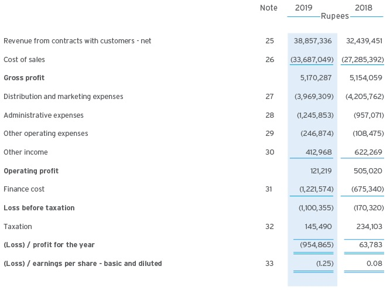

Independent Auditor’s Review Report to the
Members of FrieslandCampina Engro Pakistan
Limited
Review Report on the Statement of Compliance contained in Listed Companies
(Code of Corporate Governance) Regulations, 2019
We have reviewed the enclosed Statement of Compliance with the Listed Companies (Code of Corporate Governance)
Regulations, 2019 (the Regulations) prepared by the Board of Directors of FrieslandCampina Engro Pakistan Limited
for the year ended December 31, 2019 in accordance with the requirements of regulation 36 of the Regulations.
The responsibility for compliance with the Regulations is that of the Board of Directors of the Company. Our
responsibility is to review whether the Statement of Compliance reflects the status of the Company’s compliance with
the provisions of the Regulations and report if it does not and to highlight any non-compliance with the requirements
of the Regulations. A review is limited primarily to inquiries of the Company’s personnel and review of various
documents prepared by the Company to comply with the Regulations.
As a part of our audit of the financial statements we are required to obtain an understanding of the accounting and
internal control systems sufficient to plan the audit and develop an effective audit approach. We are not required to
consider whether the Board of Directors’ statement on internal control covers all risks and controls or to form an
opinion on the effectiveness of such internal controls, the Company’s corporate governance procedures and risks.
The Regulations require the Company to place before the Audit Committee, and upon recommendation of the Audit
Committee, place before the Board of Directors for their review and approval, its related party transactions and also
ensure compliance with the requirements of section 208 of the Companies Act, 2017. We are only required and have
ensured compliance of this requirement to the extent of the approval of the related party transactions by the Board
of Directors upon recommendation of the Audit Committee. We have not carried out procedures to assess and
determine the Company’s process for identification of related parties and that whether the related party transactions
were undertaken at arm’s length price or not.
Based on our review, nothing has come to our attention which causes us to believe that the Statement of Compliance
does not appropriately reflect the Company's compliance, in all material respects, with the requirements contained in
the Regulations as applicable to the Company for the year ended December 31, 2019.

A.F. Ferguson & Co.
Chartered Accountants
Karachi
Date: March 6, 2020
Statement of Compliance with Listed Companies
(Code of Corporate Governance) Regulations, 2019
The Company has complied with the requirements of the Regulations in the following manner:
- The total number of directors are seven (7) as per the following:
- Male: Six (6)
- Female: One (1)
- The composition of board is as follows:
| Independent Directors |
Abrar Hassan |
| Zuhair Khaliq |
| Non-Executive Directors |
Abdul Samad Dawood (Chairman)
|
|
Roeland Francois Van Neerbos
|
|
Eduardus Lambertus Holtzer
|
|
Petra Attje Zinkweg (Female Director)
|
| Executive Directors |
Ali Ahmed Khan (Chief Executive Officer – CEO)
|
- The directors have confirmed that none of them is serving as a director on more than five listed companies,
including this company.
- The company has prepared a Code of Conduct and has ensured that appropriate steps have been taken to
disseminate it throughout the company along with its supporting policies and procedures.
- The Board has developed a vision/mission statement, overall corporate strategy and significant policies of the
company. The Board has ensured that complete record of particulars of the significant policies along with their
date of approval or updating is maintained by the company;
- All the powers of the Board have been duly exercised and decisions on relevant matters have been taken by
the Board/ shareholders as empowered by the relevant provisions of the Act and these Regulations;
- The meetings of the Board were presided over by the Chairman and, in his absence, by a director elected by
the Board for this purpose. The Board has complied with the requirements of the Act and the Regulations with
respect to frequency, recording and circulating minutes of meeting of the Board;
- The Board has a formal policy and transparent procedures for remuneration of directors in accordance with
the Act and these Regulations.
- The Board has arranged Directors’ Training program for the Executive Director & CEO Mr. Ali Ahmed Khan
during the year ended December 31, 2019.
- There was no fresh appointment of CFO, Company Secretary and Head of Internal Audit during the year ended
December 31, 2019. The Board has approved the remuneration of Chief Financial Officer, Company Secretary
and Head of Internal Audit and complied with relevant requirements of the Regulations;
- Chief Financial Officer and Chief Executive Officer duly endorsed the financial statements before approval of
the Board;
- The Board formed in the prior year Committees comprising of members given below:
| Abrar Hasan (Chairman) |
Zouhair Khaliq (Chairman) |
| Zouhair Khaliq |
Petra Attje Zinkweg (Female Director) |
| Eduardus Lambertus Holtzer |
Ali Ahmed Khan |
- The terms of reference of the aforesaid committees have been formed, documented and advised to the
committees for compliance.
- The frequency of meetings of the Committees was as follows:
- Audit Committee: Four quarterly meetings during the financial year ended December 31, 2019.
- Human Resource and Remuneration Committee: Two quarterly meetings during the financial year ended
December 31, 2019.
- The Board has set up an effective internal audit function comprising of suitably qualified and experienced staff
who are conversant with the policies and procedures of the company;
- The statutory auditors of the company have confirmed that they have been given a satisfactory rating under
the Quality Control Review program of the Institute of Chartered Accountants of Pakistan and registered with
Audit Oversight Board of Pakistan, that they and all their partners are in compliance with International
Federation of Accountants (IFAC) guidelines on code of ethics as adopted by the Institute of Chartered
Accountants of Pakistan and that they and the partners of the firm involved in the audit are not a close relative
(spouse, parent, dependent and non-dependent children) of the Chief Executive Officer, Chief Financial Officer,
Head of Internal Audit, Company Secretary or Director of the Company;
- The statutory auditors or the persons associated with them have not been appointed to provide other services
except in accordance with the Act, these Regulations or any other regulatory requirement and the auditors
have confirmed that they have observed IFAC guidelines in this regard; and
- We confirm that all requirements of regulations 3, 6, 7, 8, 27,32, 33 and 36 of the Regulations have been
complied with.

Abdul Samad Dawood
Chairman
Karachi
Date: February 6, 2020
Independent Assurance Report to the Members on
the Statement of Compliance with Employees Share
Option Scheme
Scope of our work
We have performed an independent reasonable assurance engagement of FrieslandCampina Engro Pakistan Limited
(the Company) to express an opinion on the annexed Statement of Compliance with Employees Share Option Scheme
(the Statement), as approved by the shareholders in their Extra Ordinary General Meeting held on March 22, 2013 and
amended in their Annual General Meeting held on April 27, 2015 (the Scheme) and Companies (Further Issue of
Shares) Regulations, 2018 issued by the Securities and Exchange Commission of Pakistan vide SRO 1399 (I)/2018
dated November 14, 2018 (the Regulations), for the year ended December 31, 2019.
Applicable Criteria
The criteria for the assurance engagement against which the underlying subject matter (Statement for the year
ended December 31, 2019) is assessed, comprise the aforementioned Scheme and the Regulations. Our engagement
was carried out as required under Regulation No. 18 (3) (ii) of the Regulation.
Responsibility of Company’s Management
The responsibility for the preparation of the Statement (the subject matter information) and for compliance with the
requirements of the Scheme and the Regulations is that of the Management of the Company. The management is also
responsible for the design, implementation and maintenance of appropriate internal control procedures with respect
to such compliance and maintenance of relevant accounting records.
Our Independence and Quality Control
We have complied with the independence and other ethical requirements of the International Ethics Standards Board
for Accountants’ Code of Ethics for Professional Accountants as adopted by the Institute of Chartered Accountants
of Pakistan, which is founded on fundamental principles of integrity, objectivity, professional competence and due
care, confidentiality and professional behavior.
The firm applies International Standard on Quality Control 1 ‘Quality Control for Firms that perform Audits and
Reviews of Financial Statements, and Other Assurance and Related Services Engagements’ and accordingly
maintains a comprehensive system of quality control including documented policies and procedures regarding
compliance with ethical requirements, professional standards and applicable legal and regulatory requirements.
Responsibility of Independent Assurance Provider
Our responsibility is to express our conclusion on the Statement based on our independent assurance engagement,
performed in accordance with the International Standard on Assurance Engagements 3000 (Revised) ‘Assurance
Engagements other than Audits or Reviews of Historical Financial Information’ (ISAE 3000). This standard requires
that we plan and perform the engagement to obtain reasonable assurance about whether the Statement reflects the
status of Company’s compliance with the Scheme and the Regulations (the Criteria) and is free from material
misstatement.
The procedures selected by us for the engagement depend on our judgement, including an assessment of the risks of
material non-compliances with the requirements of the Scheme and the Regulations. In making those risk
assessments, we have considered internal control relevant to the Company’s compliance with the Scheme and the
Regulations in order to design procedures that are appropriate in the circumstances, for gathering sufficient
appropriate evidence to determine that the Company was not materially non-compliant with the Scheme and the
Regulations. Our engagement was not for the purpose of expressing an opinion on the effectiveness of the Company’s
internal control. Our procedures applied to the selected data primarily comprised of:
- - Verifying that only permanent employees have participated in the Scheme in compliance with the Regulations;
- - Verifying that variation, if any, in the terms of the Scheme has been approved by passing a special resolution
in the general meeting;
- - Verifying that the share options granted, vested, lapsed, surrendered or exercised under the Scheme have
been recorded in the books of accounts in accordance with the requirements of the Regulations;
- - Ensuring that adequate disclosures have been made in respect of the Scheme in the Annual Report as required
under the Regulations; and
- - Ensuring that during the year no option granted to any employee has been transferred to any other person
except to an entitled employee as per the Regulations.
We believe that the evidence we have obtained through performing our aforementioned procedures is sufficient and
appropriate to provide a basis for our opinion.
Conclusion
Based on our reasonable assurance engagement, in our opinion, the Statement for the year ended December 31, 2019,
reflects, in all material respects, the status of Company’s compliance with the Scheme and the Regulations.
A.F. Ferguson & C0.
Chartered Accountants
Karachi
Date: March 6, 2020
Engagement Partner: Osama Kapadia
Management Statement of Compliance with
Employees Share Option Scheme
FrieslandCampina Engro Pakistan Limited (the Company) for the year ended December 31, 2019 has implemented its
Employees Share Option Scheme (the Scheme) as approved by the shareholders in their Extra Ordinary General
Meeting held on March 22, 2013. The amendments to the Scheme were approved by the shareholders in the Annual
General Meeting held on April 27, 2015 and by the Securities and Exchange Commission of Pakistan on August 31,
2015. The Company for the year ended December 31, 2019 has complied, in all material respects, with the
requirements of the Scheme and the Companies (Further Issue of Shares) Regulations, 2018 (the Regulations) issued
by the Securities and Exchange Commission of Pakistan vide SRO 1399 (I)/2018 dated November 14, 2018, except that
the Board Compensation Committee, that was reconstituted by the Board of Directors on April 26, 2018, includes the
Chief Executive of the Company as one of its members, which is currently not in line with requirements of Regulation
No. 13 (1) (vii) of the Regulations. However, the vesting period under the Scheme lapsed in April 2018 and the Chief
Executive was not granted any options under the Scheme. Furthermore, the Chief Executive has recused himself from
participating in any agenda point of the Committee meetings that relates to the Scheme.
Abdul Samad Dawood
Chairman
Karachi
Date: February 6, 2020

Ali Ahmed Khan
Chief Executive Officer
Independent Auditor’s Report
To the Members of FrieslandCampina Engro Pakistan Limited
Report on the Audit of the Financial Statements
Opinion
We have audited the annexed financial statements of FrieslandCampina Engro Pakistan Limited (the Company), which
comprise the statement of financial position as at December 31, 2019, and the statement of profit or loss, the
statement of profit or loss and other comprehensive income, the statement of changes in equity, the statement of
cash flows for the year then ended, and notes to the financial statements, including a summary of significant
accounting policies and other explanatory information, and we state that we have obtained all the information and
explanations which, to the best of our knowledge and belief, were necessary for the purposes of the audit.
In our opinion and to the best of our information and according to the explanations given to us, the statement of
financial position, statement of profit or loss, the statement of profit or loss and other comprehensive income, the
statement of changes in equity and the statement of cash flows together with the notes forming part thereof conform
with the accounting and reporting standards as applicable in Pakistan and give the information required by the
Companies Act, 2017 (XIX of 2017), in the manner so required and respectively give a true and fair view of the state
of the Company's affairs as at December 31, 2019 and of the loss and other comprehensive income, the changes in
equity and its cash flows for the year then ended.
Basis for Opinion
We conducted our audit in accordance with International Standards on Auditing (ISAs) as applicable in Pakistan. Our
responsibilities under those standards are further described in the Auditor’s Responsibilities for the Audit of the
Financial Statements section of our report. We are independent of the Company in accordance with the International
Ethics Standards Board for Accountants’ Code of Ethics for Professional Accountants as adopted by the Institute of
Chartered Accountants of Pakistan (the Code) and we have fulfilled our other ethical responsibilities in accordance
with the Code. We believe that the audit evidence we have obtained is sufficient and appropriate to provide a basis
for our opinion.
Key Audit Matter
Key audit matters are those matters that, in our professional judgement, were of most significance in our audit of the
financial statements of the current period. These matters were addressed in the context of our audit of the financial
statements as a whole, and in forming our opinion thereon, and we do not provide a separate opinion on these matters.
Following is the Key audit matter:
| (i) |
Deferred tax asset relating to minimum turnover
tax
(Refer notes 3(a) and 8 to the financial statements)
As at December 31, 2019, included in the balance of
deferred tax asset (net) is an amount of Rs.
998,644 thousand representing deferred tax asset
recognised on account of minimum turnover tax.
Recognition of deferred tax asset on account of
minimum turnover tax requires management to
estimate Company’s tax liability in future tax years.
This process relies on the assessment of the
Company’s profitability forecast, which in turn is
based on assumptions concerning future economic
conditions and business performance.
As preparing of profitability forecast and
assessment of realisability of recognised deferred
tax asset requires significant management
judgement, we considered this a key audit matter.
|
Our audit procedures amongst others included the
following:
- obtained understanding of management’s
process of preparation of profitability forecast,
tax liability and deferred tax calculation;
- discussed with the management, significant
underlying assumptions used in preparing the
profitability forecast and assessed the same for
reasonableness;
- checked appropriateness of tax rates applied in
view of the local tax legislation;
- checked mathematical accuracy of calculations;
and
- reviewed and evaluated related disclosures in
the financial statements.
|
Information Other than the Financial Statements and Auditor’s Report Thereon
Management is responsible for the other information. The other information comprises the information included in
the annual report, but does not include the financial statements and our auditor’s report thereon.
Our opinion on the financial statements does not cover the other information and we do not express any form of
assurance conclusion thereon.
In connection with our audit of the financial statements, our responsibility is to read the other information and, in
doing so, consider whether the other information is materially inconsistent with the financial statements or our
knowledge obtained in the audit or otherwise appears to be materially misstated. If, based on the work we have
performed, we conclude that there is a material misstatement of this other information, we are required to report that
fact. We have nothing to report in this regard.
Responsibilities of Management and Board of Directors for the Financial Statements
Management is responsible for the preparation and fair presentation of the financial statements in accordance with
the accounting and reporting standards as applicable in Pakistan and the requirements of Companies Act, 2017 (XIX
of 2017) and for such internal control as management determines is necessary to enable the preparation of financial
statements that are free from material misstatement, whether due to fraud or error.
In preparing the financial statements, management is responsible for assessing the Company’s ability to continue as
a going concern, disclosing, as applicable, matters related to going concern and using the going concern basis of
accounting unless management either intends to liquidate the Company or to cease operations, or has no realistic
alternative but to do so.
Board of directors are responsible for overseeing the Company’s financial reporting process.
Auditor’s Responsibilities for the Audit of the Financial Statements
Our objectives are to obtain reasonable assurance about whether the financial statements as a whole are free from
material misstatement, whether due to fraud or error, and to issue an auditor’s report that includes our opinion.
Reasonable assurance is a high level of assurance, but is not a guarantee that an audit conducted in accordance with
ISAs as applicable in Pakistan will always detect a material misstatement when it exists. Misstatements can arise from
fraud or error and are considered material if, individually or in the aggregate, they could reasonably be expected to
influence the economic decisions of users taken on the basis of these financial statements.
As part of an audit in accordance with ISAs as applicable in Pakistan, we exercise professional judgement and
maintain professional skepticism throughout the audit. We also:
- Identify and assess the risks of material misstatement of the financial statements, whether due to fraud or
error, design and perform audit procedures responsive to those risks, and obtain audit evidence that is
sufficient and appropriate to provide a basis for our opinion. The risk of not detecting a material misstatement
resulting from fraud is higher than for one resulting from error, as fraud may involve collusion, forgery,
intentional omissions, misrepresentations, or the override of internal control.
- Obtain an understanding of internal control relevant to the audit in order to design audit procedures that are
appropriate in the circumstances, but not for the purpose of expressing an opinion on the effectiveness of the
Company’s internal control.
- Evaluate the appropriateness of accounting policies used and the reasonableness of accounting estimates and
related disclosures made by management.
- Conclude on the appropriateness of management’s use of the going concern basis of accounting and, based on
the audit evidence obtained, whether a material uncertainty exists related to events or conditions that may
cast significant doubt on the Company’s ability to continue as a going concern. If we conclude that a material
uncertainty exists, we are required to draw attention in our auditor’s report to the related disclosures in the
financial statements or, if such disclosures are inadequate, to modify our opinion. Our conclusions are based
on the audit evidence obtained up to the date of our auditor’s report. However, future events or conditions
may cause the Company to cease to continue as a going concern.
- Evaluate the overall presentation, structure and content of the financial statements, including the disclosures,
and whether the financial statements represent the underlying transactions and events in a manner that
achieves fair presentation.
We communicate with the board of directors regarding, among other matters, the planned scope and timing of the
audit and significant audit findings, including any significant deficiencies in internal control that we identify during our
audit.
We also provide the board of directors with a statement that we have complied with relevant ethical requirements
regarding independence, and to communicate with them all relationships and other matters that may reasonably be
thought to bear on our independence, and where applicable, related safeguards.
From the matters communicated with the board of directors, we determine those matters that were of most
significance in the audit of the financial statements of the current period and are therefore the key audit matters. We
describe these matters in our auditor’s report unless law or regulation precludes public disclosure about the matter
or when, in extremely rare circumstances, we determine that a matter should not be communicated in our report
because the adverse consequences of doing so would reasonably be expected to outweigh the public interest benefits
of such communication.
Report on Other Legal and Regulatory Requirements
Based on our audit, we further report that in our opinion:
- proper books of account have been kept by the Company as required by the Companies Act, 2017 (XIX of 2017);
- the statement of financial position, the statement of profit or loss, the statement of profit or loss and other
comprehensive income, the statement of changes in equity and the statement of cash flows together with the
notes thereon have been drawn up in conformity with the Companies Act, 2017 (XIX of 2017) and are in
agreement with the books of account and returns;
- investments made, expenditure incurred and guarantees extended during the year were for the purpose of the
Company’s business; and
- no Zakat was deductible at source under the Zakat and Ushr Ordinance, 1980 (XVIII of 1980).
The engagement partner on the audit resulting in this independent auditor’s report is Osama Kapadia.
A.F. Ferguson & C0.
Chartered Accountants
Karachi
Date: March 6, 2020
STATEMENT OF PROFIT OR LOSS
FOR THE YEAR ENDED DECEMBER 31, 2019
(Amounts in thousand except for (loss) / earnings per share)

The annexed notes 1 to 49 form an integral part of these financial statements.
Abdul Samad Dawood
Chairman
Ali Ahmed Khan
Chief Executive Officer
Imran Husain
Chief Financial Officer